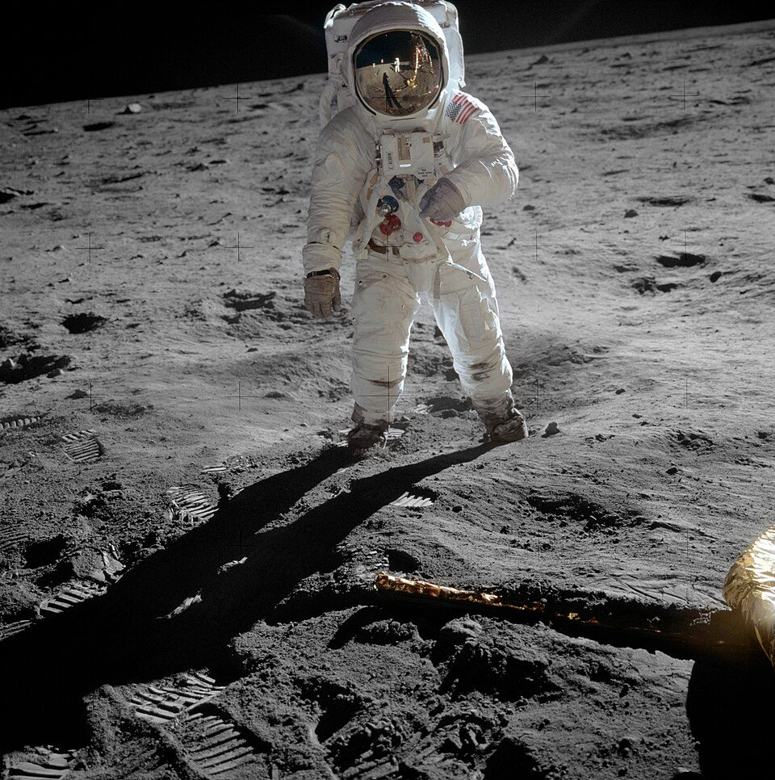

The Moon
Our only natural satellite: born from a giant impact, it drives the tides and is the only other world humans have walked on.


The Moon is the fifth-largest satellite in the solar system and, relative to its planet, the largest of all: its diameter is more than a quarter of Earth's. Its average distance is 384,400 km, which light covers in just over a second.
Born from a catastrophe
The most widely accepted theory says that about 4.5 billion years ago a Mars-sized planet, named Theia, collided with the young Earth. The impact flung a cloud of molten rock into space which, within years or perhaps even hours, gathered to form the Moon. The rocks brought back by the Apollo astronauts are chemically almost identical to those of Earth's mantle.
Always the same face
The Moon takes the same time to spin once as it does to orbit Earth, about 27.3 days. That is why we always see the same hemisphere. The other half, the far side, is not dark: it gets as much sunlight as the near side. It was first seen by the Soviet probe Luna 3 in 1959, and in 2019 China's Chang'e 4 became the first spacecraft to land there.
The phases
The Moon has no light of its own: it reflects the Sun's. Over a cycle of 29.5 days we see a different part of it lit: new moon, waxing crescent, first quarter, gibbous, full, and back again. When Earth passes exactly between the Sun and a full Moon, a lunar eclipse occurs and the Moon turns red with light filtered through our atmosphere.
Seas that are not seas
The dark patches that make up the "face" in the Moon are called maria (seas), because early astronomers thought they were water. They are actually plains of basaltic lava that filled huge impact basins more than 3 billion years ago. The bright areas are older highlands covered in craters.


Twelve people on the Moon
On 20 July 1969, Neil Armstrong and Buzz Aldrin became the first humans to walk on the Moon, while Michael Collins waited in orbit. Between 1969 and 1972, the six Apollo missions that landed carried twelve astronauts and brought back 382 kilograms of rock. NASA's Artemis programme is preparing the return, this time aiming to stay near the south pole, where there is ice in permanently shadowed craters.


The Moon and the tides
The Moon's gravity gently stretches Earth's oceans into two bulges, one on each side of the planet. As Earth rotates we pass through them and see the sea rise and fall twice a day. This friction slowly brakes our rotation and, in exchange, pushes the Moon 3.8 centimetres farther away every year, a distance measured by firing lasers at mirrors left by the astronauts.
Videos to understand it better
- Moon 101 | National GeographicNational Geographic
- The Moon: Crash Course Astronomy #12CrashCourse
Videos are from YouTube and belong to their creators. They only load when you click them. See all videos →